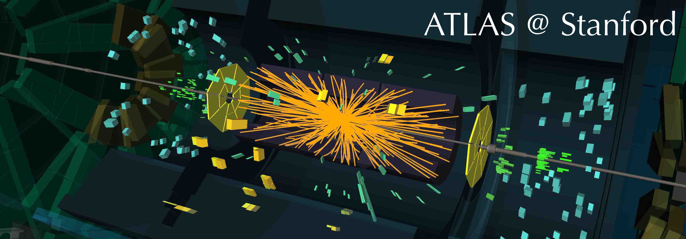
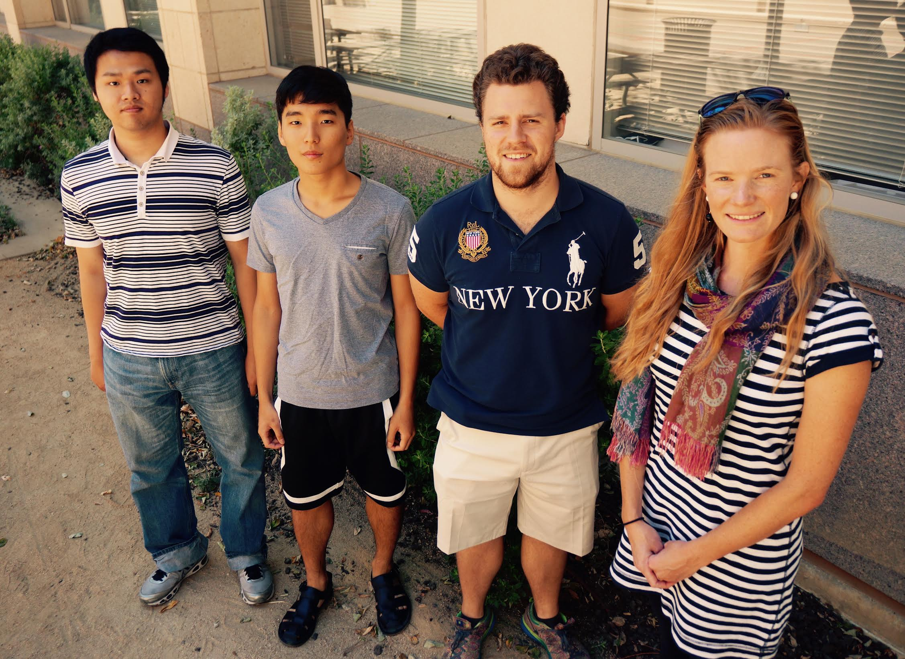
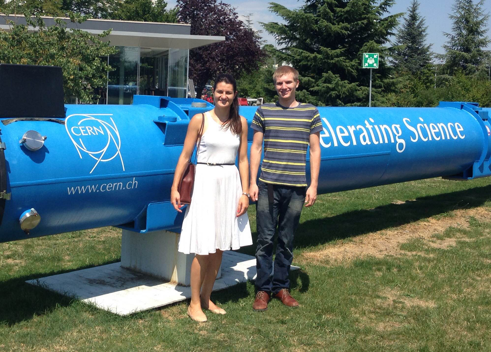

Welcome to the Stanford ATLAS Group. We hope you enjoy our site and learn about us and the work we do.
We are physicists working on the ATLAS experiment, a high energy particle physics experiment at the world’s highest energy particle accelerator, the Large Hadron Collider (LHC). The goals of the experiment are to study the most fundamental particles and forces in the universe, and to search for new particles and forces which have only been theorized.
In order to improve our ability to explore the world of fundamental particles, our group is working on a custom electronics system, the ATLAS FastTracKer (FTK), that quickly filters the tremendous amount of data produced by the experiment. Using the output of FTK, ATLAS’s data acquisition system will be able to better select which data to analyze.
We are particularly interested in the question, “Is the Higgs boson, which was observed in 2012 by ATLAS and our sister experiment, CMS, the only mass-giving particle, or is it part of a richer picture of how fundamental particles acquire mass?”. We are trying to answer this question by searching for heavier Higgs bosons, which would give evidence that there is a mass-giving family of particles rather than just a solitary boson. To facilitate this work, we are developing tools to identify high-energy Higgs boson decays.
We work closely with the SLAC Atlas group so we encourage you to visit their homepage.
Check out our blog, Dispatches from ATLAS@Stanford, for current events!

Summer 2015 Stanford contingent: (From left to right) Zihao Jiang, Mingyu Kang, Rex Brown, Lauren Tompkins. Not pictured: Grace Busse

Summer 2015 CERN contingent (From left to right) Nikolina Ilic, Jeff Rowland. Not pictured: Victor Ruelas.